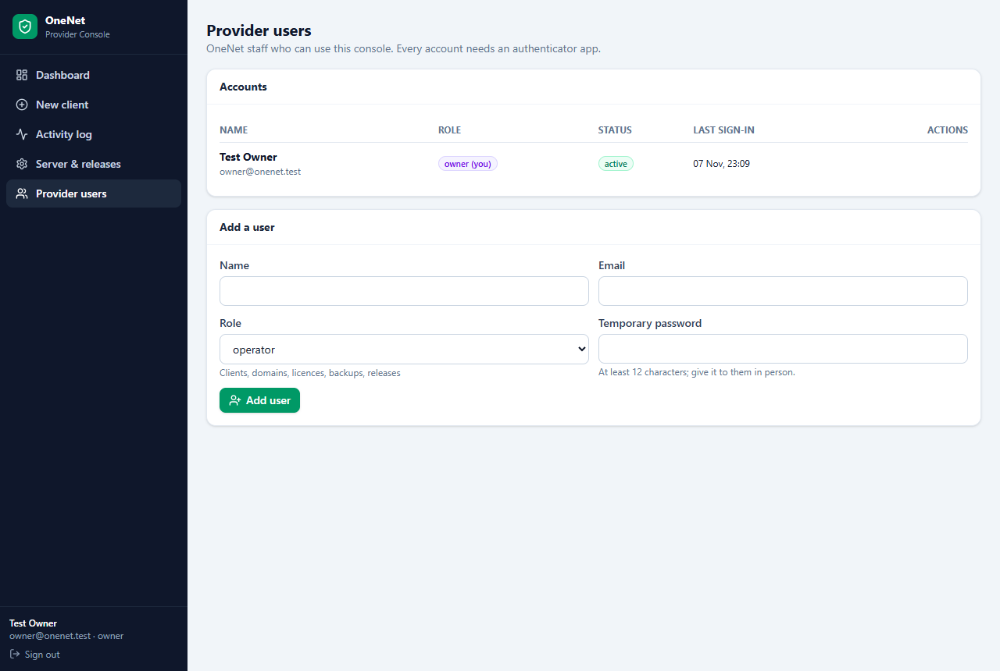
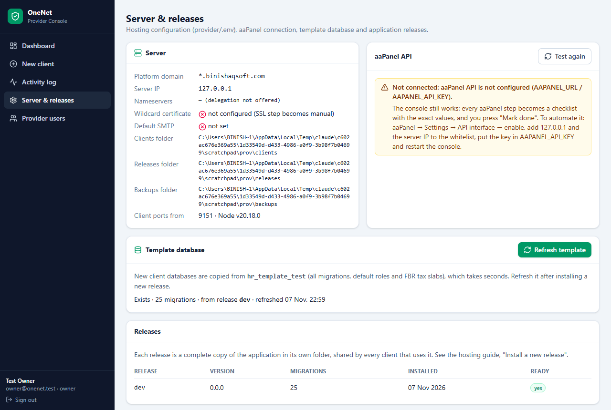

For the console owner: security model, provider users, template database, release roll-out, backup and restore, licensing policy, client lifecycle and troubleshooting.
| Part | Where | Notes |
|---|---|---|
| Application code (a "release") | /www/hr-releases/<release>/ | One complete copy per version, shared by every client on it. No copying per client. |
| A client | /www/hr-clients/<name>/ | .env (settings and keys, mode 600), start.cjs, release.json, documents/, imports/. |
| Its database | PostgreSQL hr_<name> | Own login role. Copied from the template database. |
| Its site | aaPanel Node project hr-<name> | Port from 9101 up, bound to 127.0.0.1; nginx publishes it on 443. |
| Its backups | /www/hr-backups/<name>/ | Encrypted with the client's own BACKUP_ENCRYPTION_KEY. |
| The console | /www/hr-provider/ + database hr_provider | Its own aaPanel Node project (port 8200) at admin.binishaqsoft.com. |
Every client has its own database: one client's data can never appear in another's. Backups, restores, moving a client to its own server and deleting a client's data at contract end each concern one database.

node …/provider/cli.cjs create-owner you@onenet.pk "Your Name" (see the Hosting Setup Guide).
aaPanel API: when connected, creating projects, mapping domains and issuing certificates is automatic. When it is not (or an aaPanel version answers differently), those steps become checklists with exact values; nothing fails silently. Always try a new aaPanel version with a throw-away client first.
Template database: new client databases are copied from it. Refresh it (owner only) after installing a new release, so new clients start on the newest structure.
node_modules and the built web files exist./www/hr-releases/current at the new release and restart the provider project in aaPanel.Nightly backups run from aaPanel Cron (cli.cjs nightly); each is encrypted with the client's own key and the newest 14 are kept (BACKUP_RETENTION_COUNT in the client's .env). aaPanel's directory backup copies /www/hr-backups off the server.
hr-<name> → Stop.cd /www/hr-clients/<name>
CONFIRM_DATABASE_RESTORE=RESTORE_HR_PAYROLL_DATABASE \
node /www/hr-releases/$(node -p "require('./release.json').release")/scripts/postgres-restore.cjs \
/www/hr-backups/<name>/hr-payroll-<date>.dump.enc
The restore replaces the whole client database with the backup. Anything entered after the backup is lost, so agree the time with the client.
| State | When | Effect |
|---|---|---|
| Active | Before the last 14 days | Normal. |
| Expiring | Last 14 days | Users see a yellow warning with the end date. |
| Grace | After the end date, for the grace days | Red warning with the days left; everything still works. |
| Suspended | Grace over (automatic) or "Suspend now" | Nobody can sign in; your message is shown. Kiosks keep recording punches. Resume restores access within 15 seconds. |
The staff limit stops a client making more employees active than their plan allows; existing data is never removed. Renewing = new end date + Save.
When the switch is on, the client's Super Admin (or a user with the "Data import" permission) gets Data Import in their menu and moves their CyberAP data without OneNet. Safety rails in the application:
Switch it on during onboarding and off after go-live. The procedure for the client is in the CyberAP Data Migration Guide.
DROP DATABASE hr_<name>; DROP ROLE hr_<name>;; remove /www/hr-clients/<name> and, when no longer required, /www/hr-backups/<name>. Record it in the client notes first.| Task (aaPanel Cron) | Schedule | Does |
|---|---|---|
cli.cjs nightly | Daily 02:00 | Backs up every active client, re-checks every domain (DNS, certificate, registration) and health. Exit code 2 when something needs attention. |
cli.cjs health | Every 10 minutes | Answers, response time, database size, active staff, attendance today, kiosks online. |
Set aaPanel to notify you when a Cron task fails (aaPanel → Cron → notification), and look at the dashboard's "Needs attention" every morning.
A client on their own server is not in the console. For them the vendor console still exists (login onenet with the daily password): Edition and Installation & licence (client data import switch, licence, suspend). On hosted installations it is disabled.
| Problem | Cause and fix |
|---|---|
| A setup step shows the hand with "aaPanel API is not configured" | Do the step in aaPanel with the values shown, then Mark done; or connect the API (Hosting Setup Guide, step 8). |
| Health: "App: ECONNREFUSED" | The client's project is stopped or crashed. aaPanel → Node Project → hr-<name> → Start; open its log for the error (often a wrong value in its .env). |
| "Database: password authentication failed" | The client's role password differs from its .env. Re-run the setup job's database step (Retry) or set the password in PostgreSQL to the one in the .env. |
| Domain stays "pending dns" | The record is missing or wrong. Open the DNS sheet, compare with the client's DNS panel (common: the panel wants only "hr" as the name). Retry after fixing. |
| Domain: "HTTPS: certificate has expired / not trusted" | Let's Encrypt renewal failed in aaPanel (DNS changed, port 80 blocked). aaPanel → site → SSL → renew; then Retry the domain job. |
| Release switch: "does not answer after the switch" | Check the project log. Switch back to the previous release; restore the switch job's backup if a migration failed. |
| Backup failed: "could not start pg_dump" | PG_DUMP_PATH in the client's .env does not exist: set PG_BIN_DIR in the console's .env to the server's PostgreSQL bin folder and fix the client's .env. |
| Kiosk: "setup code invalid, expired or already used" | Create a new code (codes are single-use by default and expire). |
| Users of a client cannot sign in, message about suspension | Licence suspended (by hand or after the grace period). Renew or Resume. |
| Locked out of the console | Another owner resets your authenticator. If no owner can sign in: on the server, create a new owner with cli.cjs create-owner. |